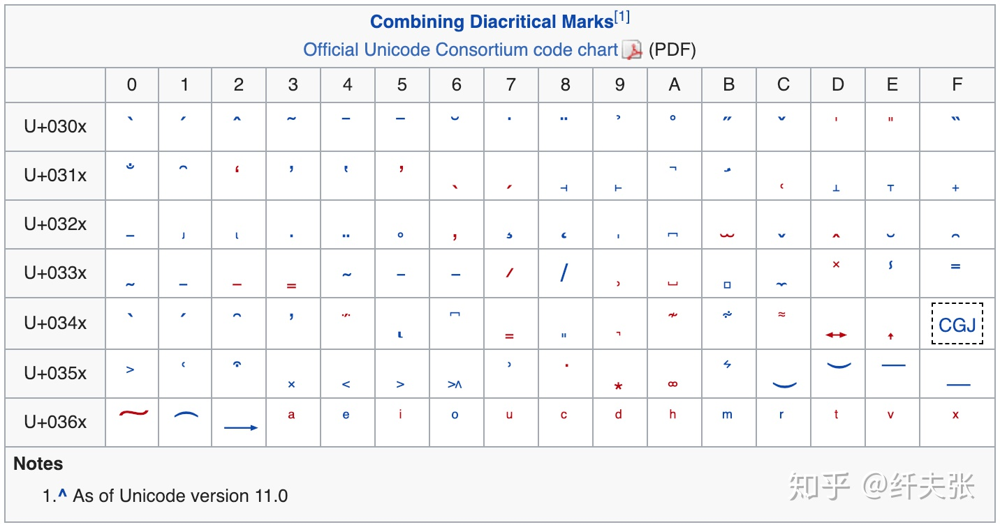
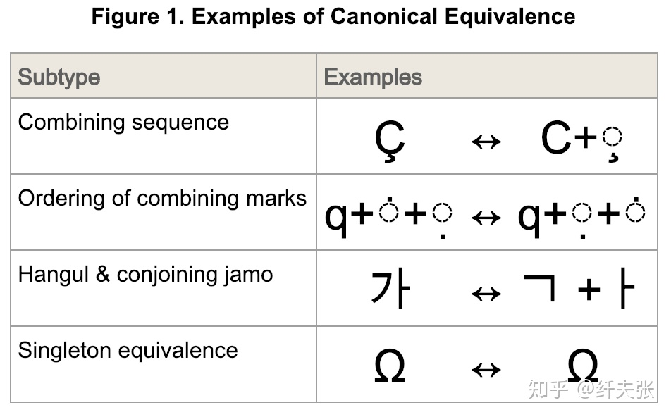
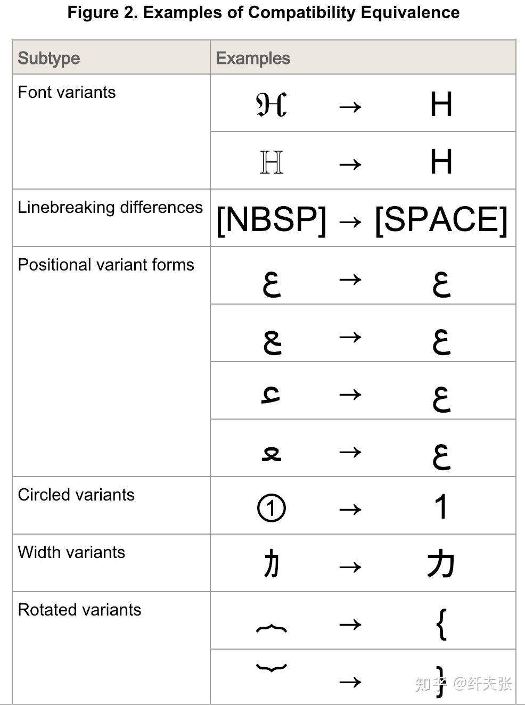
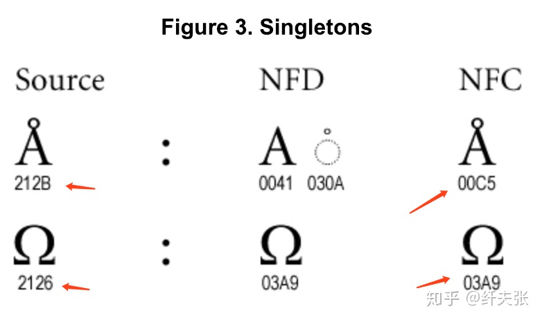

其实你并不懂 Unicode (轉載)
古有 Babel 通天塔，今有 Unicode 字符集，很多编程语言支持 Unicode，甚至在语法层面直接支持，绝大部分程序员可能会因此觉得自己懂 Unicode 了，自己的代码不需要特别注意就能处理世界上所有语言的字符了，觉得 Unicode 高大上真善美，其实并非如此，下面讲述下作为一个程序员，你需要了解的几个关键概念，里面颇有几个大坑，看看各位知道几个
第一坑：surrogate pair
关于 Unicode、BMP、UCS-2、UCS-4、UTF-8、UTF-16、UTF-32 的概念就不再赘述了，网上有很多讲述极好的文章，这里面有两个很重要的术语：
- code point: 指 Unicode 标准里“字符”的编号，目前 Unicode 使用了 0 ~ 0x10FFFF 的编码范围。这里字符二字加了引号，是因为这个概念很混淆，后面会再讲述。
- code unit: 指某种 Unicode 编码方式里编码一个 code point 需要的最少字节数，比如 UTF-8 需要最少一个字节，UTF-16 最少两个字节，UCS-2 两个字节，UCS-4 和 UTF-32 四个字节，后面三个是定长编码。
早期的时候，Unicode 只用到了 0~0xFFFF 范围的数字编码，这就是 BMP 字符集，UCS-2 编码，很多语言就用 2 bytes 来表示 wchar_t 或者 char，典型的例子是 C/C++/Java。但后来 Unicode 组织胡搞瞎搞居然用到了超过这个范围的数字，于是就出来 surrogate pair 的概念了。
Surrogate pair 是专门用于 UTF-16 的，以向后兼容 UCS-2，做法是取 UCS-2 范围里的 0xD800~0xDBFF(称为 high surrogates) 和 0xDC00~0xDFFF(称为 low surrogates) 的 code point，一个 high surrogate 接一个 low surrogate 拼成四个字节表示超出 BMP 的字符，两个 surrogate range 都是 1024 个 code point，所以 surrogate pair 可以表达 1024 x 1024 = 1048576 = 0x100000 个字符，这就是 Unicode 的字符集范围上限是 0x10FFFF 的原因，为了照顾 UTF-16 以及一大堆采用了 UTF-16 的语言、操作系统（比如 Windows），这个上限不能突破，哪怕 UTF-8 和 UTF-32 可以编码更大的范围，实在是历史悲剧！
采用 2 bytes 表示 wide char 的编程语言，比如 C/C++/Java，就有一个大坑：
- string 的长度并不是切分成 char 数组的长度；
- 翻转 string 并不是简单的把 string 切分成 char 数组然后翻转数组并拼接！
Java 的 String 内部用的 UTF-16 编码，其 String.length() 不处理 surrogate pair，它直接返回 code unit 的个数，也就是 Java 的 2 字节 char 的个数，坑死人不赔命！
Java 的 StringBuilder.reverse() 和 StringBuffer.reverse() 则都对 surrogate pair 特殊处理，会把这个 pair 当成单个字符看待，可喜可贺，但是有可能会把非 surrogate 转成 surrogate pair，比如 0xDC00 0xD800 这个字符串，第一个字符在 low surrogate 范围，第二个字符在 high surrogate 范围，由于顺序不符合 surrogate pair 标准，所以这是两个独立字符，但翻转后成了 0xD800 0xDC00，这是一个合法的 surrogate pair，表示一个字符，也就是两个字符翻转成了一个字符，等价于 0x100000，这是 surrogate pair 规则的根深蒂固问题，倒也不怪 Java。
到这里，大家有没有理解 UTF-2，UTF-16 以及 surrogate pair 多么龌龊了吧，没理解的同学请自觉重读。
新兴编程语言 Rust 的设计很好，其 String 是 UTF-8 编码，其 char 是 UCS-4 编码，并且 char 指的是 unicode scalar value，这个术语指去掉 high surrogate 和 low surrogate 这 2048 个 code points 后剩下的 code points，这个设计非常完美，完全避开了 surrogate pair—— surrogate pair 表达的字符就用 0x10000 ~ 0x100000 范围直接表达了。
然而，Rust 并没有做到极致，不能直接在语言里处理 grapheme cluster 概念，而是要借助外部库，非常可惜。 Grapheme cluster 概念就是 Unicode 的第二大坑，且听我道来。
第二坑：grapheme cluster
倘若你很牛掰知道 surrogate pair，我猜你极大概率不知道 grapheme cluster 这玩意。如同 phoneme 这个单词是表示听觉上的音素、音位，表示听觉上可以分辨的最小单元，grapheme 这个单词表示视觉上的字素、字位，也就是人们识别的、口头指称的“字符”，grapheme cluster 实际就是指 grapheme，我没看懂 Unicode glossary 中这俩术语的区别。 大概是由于 Unicode Text Segmenation 这个标准的缘故，现在大家用 grapheme cluster 这个称呼更多。
据两个例子，印度语的 नमस्ते 是英语 hello 的意思：
> jshell
| Welcome to JShell -- Version 11
| For an introduction type: /help intro
jshell> var s = "नमसत";
s ==> "नमस्ते"
jshell> s.length()
$2 ==> 6
jshell> s.split("\\b{g}")
$3 ==> String[4] { "न", "म", "स्", "ते" }
jshell> s.toCharArray()
$4 ==> char[6] { 'न', 'म', 'स', '्', 'त', 'े' }
jshell> for (var c : s.toCharArray()) System.out.printf("%c %X\n", c, (int)c)
न 928
म 92E
स 938
् 94D
त 924
े 947
可以看到，这个印度语字符串包含了 6 个 UTF-16 code units，6 个 Unicode code points，并且不是 surrogate code point，所以它按理说是 6 个 "Unicode character"。 但其实它是 4 个 grapheme clusters，也就是说“人可以识别的 4 个字符”。这里 \b{g} 是 JDK 9 新加的正则表达式语法，表示 grapheme cluster 边界。JDK 9 还新增了 \X 表示一个 grapheme cluster(这是抄的 Perl 5 正则表达式语法）。
另一个取自 Python 库 grapheme 的例子，这个诡异的下划线单词：u̲n̲d̲e̲r̲l̲i̲n̲e̲d̲，注意这并不是大家常见的那种下划线，这里的下划线是字符本身自带的。这个字符串是 10 个字符(grapheme clusters)，但它对应了 20 个 Unicode code points！
> jshell
| Welcome to JShell -- Version 11
| For an introduction type: /help intro
jshell> var s = "u̲n̲d̲e̲r̲l̲i̲n̲e̲d̲";
s ==> "u̲n̲d̲e̲r̲l̲i̲n̲e̲d̲"
jshell> s.length()
$2 ==> 20
jshell> s.split("\\b{g}")
$3 ==> String[10] { "u̲", "n̲", "d̲", "e̲", "r̲", "l̲", "i̲", "n̲", "e̲", "d̲" }
jshell> s.toCharArray()
$4 ==> char[20] { 'u', '̲', 'n', '̲', 'd', '̲', 'e', '̲', 'r', '̲', 'l', '̲', 'i', '̲', 'n', '̲', 'e', '̲', 'd', '̲' }
jshell> for (var c : s.toCharArray()) System.out.printf("%c %X\n", c, (int)c)
u 75
̲ 332
n 6E
̲ 332
d 64
̲ 332
e 65
̲ 332
r 72
̲ 332
l 6C
̲ 332
i 69
̲ 332
n 6E
̲ 332
e 65
̲ 332
d 64
̲ 332
这个字符串用 Java 的 new StringBuilder(s).reverse() 翻转，结果是错的，有兴趣的同学可以试验下。
好的，问题来了，要怎么正确的按照 grapheme cluster 来翻转这些奇特的字符串呢？我给两个例子，大家可以再发挥下各自喜爱的语言，看你喜爱的语言标准功能能否处理，是否要借助第三方库——要借用第三方库是比较矬的，而完全处理不了的语言则是最矬的！
第一个例子是 Perl 的，作为拥有史上最强、当今最强正则表达式引擎的编程语言，它同样是Unicode支持当今最强语言，没有之一！2002 年发布的 Perl 5.8.0 是第一个推荐使用的支持 Unicode 的版本，到 2017 年发布的 Perl 5.26.0，2018 年发布的 Perl 5.28.0，十六年的努力，Perl 在向后兼容的同时，在字符串、正则表达式、标准库上原生的完美支持最新 Unicode 标准，“你们 Python 粉啊，对 Perl 的力量一无所知！”
Perl 的手册页 perluniintro、perlunicook、perlunifaq 对其 Unicode 支持有极好的介绍，下面这段代码来自 perlunicook，核心代码是 reverse $s =~ /\X/g 这句，\X 表示匹配 grapheme cluster。
> cat a.pl
#!/usr/bin/perl
use utf8; # so literals and identifiers can be in UTF-8
use v5.12; # or later to get "unicode_strings" feature
use strict; # quote strings, declare variables
use warnings; # on by default
use warnings qw(FATAL utf8); # fatalize encoding glitches
use open qw(:std :encoding(UTF-8)); # undeclared streams in UTF-8
use charnames qw(:full :short); # unneeded in v5.16
my $s = "नमस्ते";
my @a = $s =~ /(\X)/g;
print "$s\n";
print join(" ", @a), "\n";
my $str = join("", reverse $s =~ /\X/g);
@a = $str =~ /(\X)/g;
print "$str\n";
print join(" ", @a), "\n";
> perl a.pl
नमस्ते
न म स् ते
तेस्मन
ते स् म न
Java >= 9 的支持也不错：
> jshell
| Welcome to JShell -- Version 11
| For an introduction type: /help intro
jshell> import java.util.*;
jshell> var s = "नमसत";
s ==> "नमसत"
jshell> var a = Arrays.asList(s.split("\\b{g}"))
a ==> [न, म, स, त]
jshell> Collections.reverse(a)
jshell> String.join("", a).split("\\b{g}")
$5 ==> String[4] { "त", "स", "म", "न" }
除了用 \b{g}，也可以用 Java 8 的 \X 以及 java.util.regex.Pattern 类处理, 或者 java.text.BreakIterator:
> jshell
| Welcome to JShell -- Version 11
| For an introduction type: /help intro
jshell> import java.util.*;
jshell> import java.text.*;
jshell> var s = "नमसत";
s ==> "नमसत"
jshell> var iter = BreakIterator.getCharacterInstance(Locale.US);
iter ==> [checksum=0xee8de505]
jshell> iter.setText(s);
jshell> var end = iter.last();
end ==> 4
jshell> for (var start = iter.previous(); start != BreakIterator.DONE; end = start, start = iter.previous()) System.out.println(s.substring(start, end))
त
स
म
न
综上，一个 Unicode native 的编程语言，其 char 类型应该至少是 4 bytes，其字符串、正则表达式应该能以 grapheme cluster 为“字符”单位。
从古至今，编程语言层出不穷，但在 string 类型直接考虑 grapheme cluster 的凤毛麟角，这其中 Erlang 语言以及基于 Erlang 的 Elixir 语言就是这个凤毛麟角——“你们 Go 粉啊，对 Erlang 的力量一无所知！“
> erl
Erlang/OTP 20 [erts-9.1.5] [source] [64-bit] [smp:8:8] [ds:8:8:10] [async-threads:10] [hipe] [kernel-poll:false] [dtrace]
Eshell V9.1.5 (abort with ^G)
1> Reverse = string:reverse("नमसत").
[2340,2360,2350,2344]
2> io:format("~ts~n",[Reverse]).
तसमन
ok
3>
在对待 grapheme cluster 上，macOS、Windows 都没能幸免，在 macOS Safari、notes、Chrome、MS Word 以及 Windows 上的 Notepad 试验后发现，它们对于 नमसत 的处理非常奇怪：
- 主窗口的文本输入框里，从光标移动上看，它们把这个字符串认为是三个字符，在 Safari 和 Chrome 的地址栏输入框里，从光标移动上看，它俩认为这是四个字符；
- 从这个字符串末尾按 Delete(mac) or Backspace(Windows) 删除，需要按六次才能删完，也就是说按六个 code point 处理的；
- 从这个字符串开头按 Fn-Delete(mac) or Delete(Windows)删除，只需要按三次就能删完，不知道什么鬼；
联系到 glyph 的渲染本身又是一大坑，有 ligature 这种奇葩玩意，我只能庆幸我没进入前端开发领域
OK, 到这里估计你们对 Unicode 已经累觉不爱了，不好意思，没完，咱再看 Unicode 第三坑。
第三坑：combining character
从上面两坑我们学习到，有两个 surrogate code point 组成一个"字符"(unicode scalar value)，有多个 unicode scalar value 组成一个“字符”(grapheme cluster)，但其实还有一种情况：一个 Unicode 字符有多种表示形式，单个 code point 表示以及多个非 surrogate code points 的组合形式。
出现这种组合的原因主要是变音符号(diacritical marks)，这里面包含了重音符号(accent)，这是来自维基百科的一张表：

很多语言里都有这种带变音符号的字母，比如 He̊llö 里面很个性的 e 和 o，比如下面这张海报：
为什么要有组合字符呢？因为大家都想给某个字符加各种注音符号，如果给每个组合都申请一个 code point，那恐怕 Unicode 0x10FFFF 个 code point 没多久就用光了，大家也没机会吃饱了撑的往 Unicode 里加 emoji 字符了。。。据说韩国人很精明，他们给韩文的组合字符申请了单独的 code point，而印度人没太在意这事
更坑爹的是，拉丁字母里带注音符号的字符使用广泛，早已经单独收入 Unicode 里了，所以出现一个 Unicode 字符会有多种 code point 表示的情况，也就牵涉到Unicode 标准 Unicode normalization forms，这就是 Perl 的内置标准模块 Unicode::Normalize 的用途，只有 normalization 之后，在代码里才能用普通的 "==" 操作符或者 "equals()" 方法等可靠的判断 Unicode 字符、字符串的等价。
Unicode 定义了两种等价关系：canonical equivalence 和 compatibility equivalence，前者严格、保守，指组合前后的字符在显示上是相同的，后者则宽泛、激进，显示上不同但认为是等价字符，如下图所示。


两种等价方式带来四种 normalization form:
- Canonical Equivalence
- Normalization Form D (NFD): 把单 code point 表示的字符拆开(Decompose)成多个 code point 表示形式，并对一个字符的多个 code point 进行规范排序（比如一个字符上下各有一个点，那么总得有一个点对应的 code point 排在另一个点对应的 code point 前面）；
- Normalization Form C (NFC)：把多个 code point 形式组合（compose）成单 code point 形式，如果没有单 code point 形式，则做一个正规排序
- Compatibility Equivalence
- Normalization Form KD (NFKD): 这里的 K 指 Compatibility。意义与 NFD 类似。
- Normalization Form KC (NFKC): 意义与 NFC 类似。
这四种 normalization form 对应 Perl 标准模块 Unicode::Normalize 里四个同名函数。用法是这样的：
- 如果你的业务逻辑需要比较严的等价变换，那么对外部输入文本先做 NFD，这个意图是把 Å (A 上一个小圆圈）变成 A + 小圆圈，这样在排序等场合符合直觉，然后在处理完后 NFC，把组合字符尽可能变成单个 code point，以节约存储。
- 如果你的业务逻辑需要比较宽的等价变化，那么类似，输入经过 NFKD，业务处理，然后经过 NFKC，输出。
这个用法在 perlunicook 的 Generic Unicode-savvy filter 一节有讲到。
有个需要注意的点是，同一个 Unicode string，经过 NFD 再 NFC 后，其未必等于原始字符串，原因是有的同一个字符，在 Unicode 中有多个单 code point 表示，也许是规范制定过程中参与人员太多、字符太多、历时太长导致的失误或者兼容性考虑。下面是 Unicode Normalization Forms 标准中的一个例子：

结语
恭喜您看到这里，感谢您的耐心，您的 Unicode 技能水平打败全球 99.99% 的程序员了，从此以后，您可以底气十足的跟人说“你这语言 or 软件的 Unicode 支持很烂嘛，水平不行啊”！其实昨天之前我也不知道 surrogate pair 之后的坑，在阅读 The Rust Programming Language 一书时了解到 grapheme cluster 的概念，然后研究之下发现道道还挺多 ♂️不过话说来，虽然 Unicode 细节坑死人，依然不妨碍它是人类信息技术历时上伟大的通天塔，功德无量！而随着 emoji 字符的盛行，跨文化交流的盛行，大家使用的、编写的软件还是会时不时遇到这些坑的，比如编辑器、终端模拟器里的字符对齐。
最后，安利下 Rust 语言，如今的 Rust 1.31.1 已经发布，语法趋于成熟，“一百种指针的写法”时代已经成为过去（可怜 2015 年 Rust 1.0 发布，2017 年底才算语法趋于尘埃落定），这是一份深思熟虑了八年的 Better C++，在 C++ 一脉的零开销抽象上再上一层楼，同时提供极高的内存安全性，内存使用效率，运行效率，您可以入手开始轮了，祝愿 Rust 在小工具、高性能低延迟服务端、游戏、大数据、科学计算等等领域发光发热，也算 Mozilla 泉下瞑目了